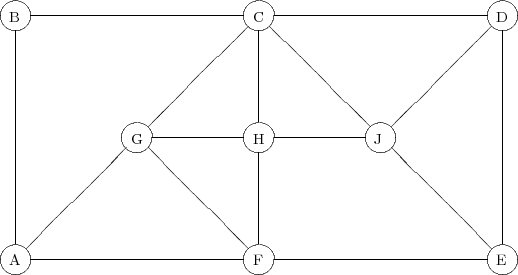

Due: Friday March 6th, 2015.
Penalty for late homeworks: 10% for each day or part of a day.
The following graph G = (V,E) is used in question 1.

is
where x3 and x4 are the slack variables in the two constraints. Find the Gomory and strong Gomory cutting planes implied by the two constraints. Express these constraints in terms of the original variables x1 and x2 and draw them on a graph of the feasible region.
What is the dimension of S? Give a minimal description of the convex hull of S using inequalities and/or equalities. What are the Chvatal ranks of the inequalities? (If you have any equalities, give the Chvatal rank for both the ≥ and the ≤ versions.)
Show that the constraint ∑ i=1nxi ≥ n - 1 is valid. Give a fractional point with 0 ≤ x ≤ e that satisfies the original n(n - 1)∕2 constraints but violates the new constraint. What is the Chvatal rank of this new constraint?
We want to solve the MAXCUT problem on this graph. In this problem, the vertices are partitioned into two sets with the objective of maximizing the total weight of the edges with one endpoint in each set. This can be modeled as an integer programming problem by introducing binary variables xe to indicate whether an edge is in the cut.
Take the unit box as the initial LP relaxation. Solve this problem by using the following two-step procedure:
and repeating. Write down the cuts violated at each iteration. You should only need to add one constraint of the second type. (You may want to use AMPL or a similar package to solve the LP relaxations. See the course webpage for details on how to use AMPL. If you need more help, see me. The initial AMPL model and data file are in
respectively.)
| John Mitchell |
| Amos Eaton 325 |
| x6915. |
| mitchj at rpi dot edu |
| Office hours: Tuesday, Wednesday, 2-4pm. |